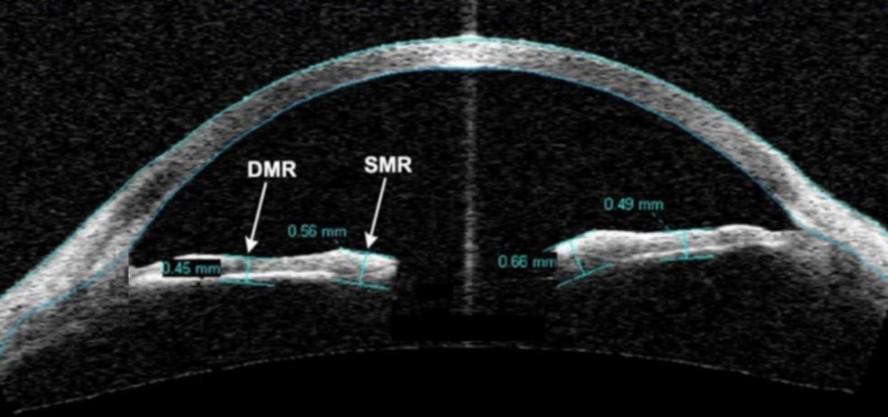
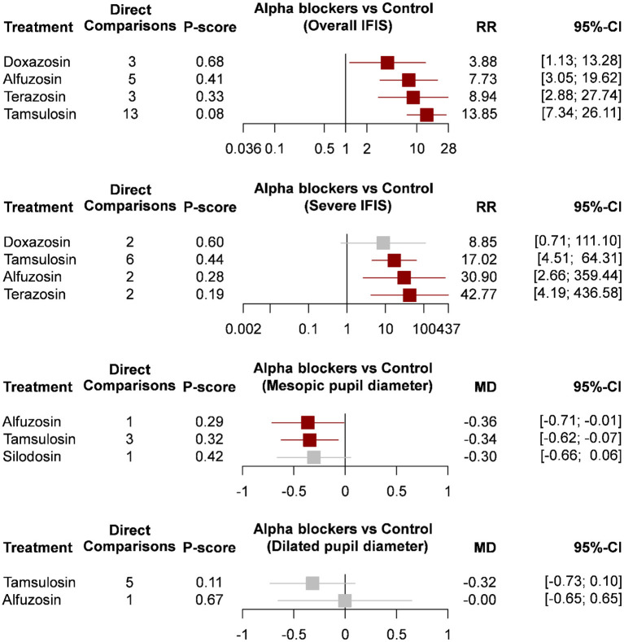
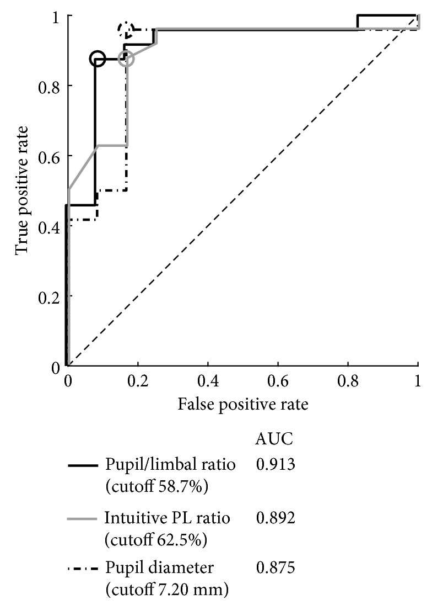
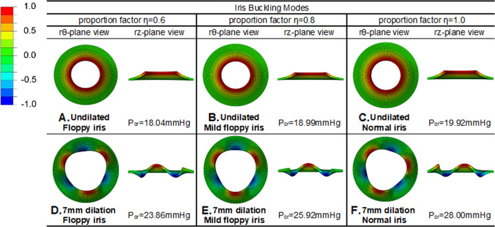
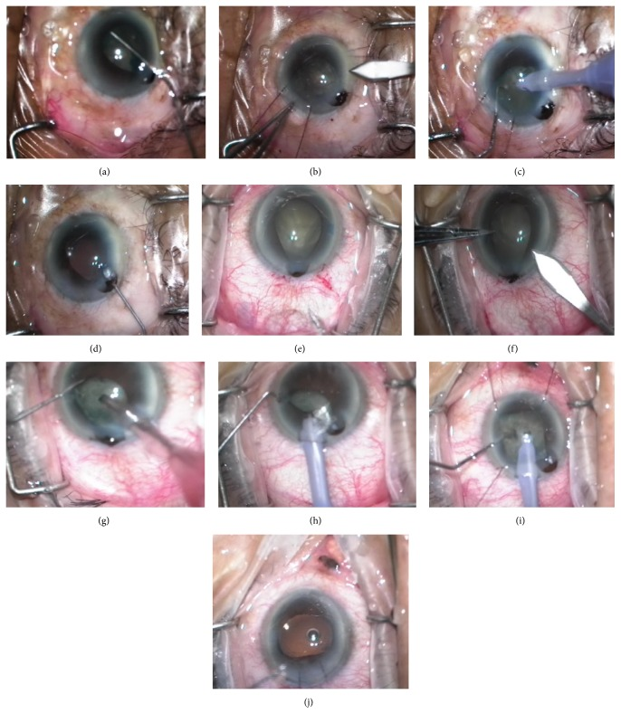
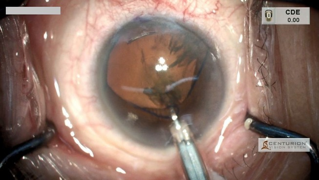

1508 — Hội chứng mống mắt đàn hồi (IFIS) khi mổ đục thể thủy tinh: tam chứng trong mổ, dự báo trước bằng PL ratio và AS-OCT / Intraoperative floppy iris syndrome
Tags: pattern:mong-mat-dan-hoi pattern:dong-tu-co-lai pattern:mong-mat-sa-vet-mo pattern:dong-tu-gian-kem pattern:DMR-mong vung:mat vung:the-thuy-tinh vung:tien-phong vung:limbus protocol:AS-OCT protocol:UBM protocol:PL-ratio protocol:sieu-am-tien-phong score:Chang-0-3 incidentaloma:khong
Mức chắc chắn (certainty): tổng hợp y văn (literature synthesis) — dựng từ 1 phân tích mạng 6.488 ca / 25 nghiên cứu tiến cứu (Front Med 2022, PMC9468244, CC BY 4.0 — dùng ảnh forest plot), 1 nghiên cứu cắt ngang 60 mắt có AS-OCT định lượng DMR/SMR (BMC Ophthalmol 2024, PMC11451146, CC BY 4.0 — dùng ảnh AS-OCT), 1 nghiên cứu 84 mắt dựng đường cong ROC cho PL ratio (J Ophthalmol 2018, PMC6317099, CC BY 4.0 — dùng ảnh ROC), 1 mô hình phần tử hữu hạn về độ vênh của mống mắt (Eye 2020, PMC7784872, CC BY 4.0 — dùng ảnh sơ đồ), 1 loạt 1.003 mắt tại Ấn Độ (PMC4185166, CC BY-NC-SA 3.0 — chỉ đọc số liệu), 2 tổng quan (PMC7039091, PMC7729334 — chỉ đọc số liệu), 1 phân tích chi phí 1.294 ca (PMC10020785, CC BY 4.0 — chỉ đọc số liệu), và 2 ca có ảnh phẫu thuật CC BY (PMC5141300 CC BY 4.0; PMC7187865 CC BY-NC 3.0). Nhóm không có bệnh nhân của mình; chỗ chưa đủ chắc ghi "chưa rõ". Không ghi tên tác giả trong bài — attribution ghi tạp chí + năm + PMCID (đối chiếu authorString ở images/CREDITS.md).
Câu chốt: IFIS không phải "đồng tử nhỏ do dính" mà là mất trương lực cơ giãn đồng tử do thuốc, có thể không hồi phục — nên nó không đáp ứng giãn đồng tử, xảy ra dù đã ngừng tamsulosin nhiều tháng, và tái diễn ở mắt thứ hai. Bốn con số phải thuộc: (1) nguy cơ IFIS khi dùng α1-antagonist: tamsulosin RR 13,85 (7,34–26,11), terazosin 8,94, alfuzosin 7,73, doxazosin 3,88 trên 6.488 ca (PMC9468244); thể nặng thì tamsulosin 17,02 nhưng alfuzosin 30,90 và terazosin 42,77 — khoảng tin cậy rất rộng, không được đọc "alfuzosin an toàn" (PMC9468244); (2) trên AS-OCT, vùng cơ giãn (DMR) mỏng 354,6 ± 83,7 µm so với 446,9 ± 92,6 µm ở chứng (p < 0,001), trong khi vùng cơ thắt (SMR) không khác (473,2 vs 460,5 µm; p = 0,53) — tức tổn thương chọn lọc cơ giãn (PMC11451146); (3) PL ratio (đồng tử giãn / đường kính giác mạc ngang) < 58,7% dự báo IFIS với AUC 0,913; đồng tử giãn ≤ 7,0 mm có độ nhạy 73% / độ đặc hiệu 95% (PMC6317099; PMC7039091); (4) IFIS làm ca mổ đắt thêm 101,34 € (vật tư 420,2 vs 359,9 €, thời gian 30,9 vs 21,4 phút) và biến chứng 18,75% vs 4,32% (PMC10020785). Bẫy chết người: gọi cơn co đồng tử trong mổ là "dính sau" rồi xử trí bằng tách dính — trong khi nguyên nhân là mất trương lực cơ giãn và cách xử trí là giảm flow + mở đồng tử bằng dụng cụ (PMC7039091; PMC5141300).
1. Tổng quan bệnh học – cơ chế hình ảnh (TẠI SAO)
1.1 Vì sao đúng cơ giãn đồng tử — và vì sao tổn thương khó hồi phục
- Cơ giãn đồng tử (dilator pupillae) là cơ trơn xếp hướng tâm từ bờ đồng tử ra rìa mống mắt; trương lực của nó mở đồng tử, còn cơ thắt (sphincter pupillae) đóng đồng tử theo hệ phó giao cảm. Hai cơ đối kháng, nên cùng một đường kính đồng tử có thể do hai cơ chế khác nhau.
- Thụ thể α1A chiếm ưu thế ở cơ giãn (và ở cơ trơn tuyến tiền liệt). Tamsulosin gắn α1A/α1D với ái lực cao gấp ~10–20 lần các α1-antagonist khác, nên ức chế cơ giãn mạnh nhất — đúng là lý do nó vừa hiệu quả cho BPH vừa gây IFIS nhiều nhất (PMC7039091; PMC11451146).
- Hai cơ chế cộng lại:
- Ức chế chức năng: chẹn α1A → cơ giãn không co → đồng tử không mở dù nhỏ atropine/phenylephrine đủ liều.
- Thoái hóa cấu trúc: dùng lâu dài gây teo sợi cơ giãn; tamsulosin còn gắn melanin trong mống mắt, làm tăng quá trình teo. Vì vậy ngừng thuốc không phục hồi — đã có ca IFIS nặng sau khi ngừng tamsulosin 2 năm, và ca khởi phát chỉ sau 48 giờ dùng thuốc (PMC7039091; PMC11451146).
- Hệ quả định lượng trên AS-OCT: vùng DMR (dilator muscle region) mỏng 354,6 ± 83,7 µm ở nhóm dùng α1-antagonist so với 446,9 ± 92,6 µm ở chứng (p < 0,001), còn SMR (sphincter muscle region) 473,2 ± 76,5 vs 460,5 ± 99,5 µm (p = 0,53) — không khác. Tỉ lệ DMR/SMR khác có ý nghĩa (p < 0,001), và thời gian dùng thuốc càng dài → DMR/SMR càng thấp (r = 0,47; p = 0,001) (PMC11451146). Đây là bằng chứng hình ảnh trực tiếp cho "teo chọn lọc cơ giãn", không phải "mống mắt teo đều".
1.2 Vì sao đồng tử co trong mổ — vật lý đơn giản nhưng quyết định
- Diện tích đồng tử tỉ lệ bình phương đường kính: S = π·d²/4. Từ 7,0 mm xuống 6,0 mm mất ~27% diện tích; xuống 5,0 mm mất ~49%. Với đầu phaco ~2,8 mm, đồng tử 5 mm chỉ còn ~1,1 mm vành mỗi bên — đủ để đụng mống mắt khi xoay nhân.
- Vì sao co dần chứ không co ngay: khi tưới hút, dòng chảy và chấn thương cơ học giải phóng prostaglandin tại chỗ → cơ thắt co thêm; đồng thời áp lực tưới đẩy mống mắt về phía vết mổ. Ở mống mắt bình thường, cơ giãn giữ được vòng cung; ở mống mắt mất trương lực, vòng này sụp (buckle).
- Mô hình cơ học định lượng: mô phỏng phần tử hữu hạn cho áp lực tới hạn gây vênh (critical buckling pressure, Pcr) của mống mắt: 18,04 mmHg (mống mắt "floppy") so với 19,92 mmHg (bình thường) khi chưa giãn; khi giãn 7 mm, 23,86 vs 28,00 mmHg (PMC7784872). Áp lực tưới phaco thường 20–30 mmHg → mống mắt floppy vênh ngay trong dải áp lực làm việc, còn mống mắt bình thường thì không. Đây là lời giải thích vật lý cho "lượn sóng" nhìn thấy trên màn hình.
- Vì sao sa ra vết mổ: vết mổ hơi rò tạo gradient áp lực từ tiền phòng ra ngoài; mống mắt mất trương lực bị hút vào dòng rò và kẹt ở mép vết mổ. Vì vậy sa mống mắt không phải "mống mắt yếu" đơn thuần — nó là dấu hiệu của vết mổ không kín + mống mắt floppy, và xử lý bằng cách làm kín vết mổ, không chỉ bằng thuốc.
1.3 Vì sao nhìn thấy và đo được trên AS-OCT / UBM (vật lý)
| Công cụ | Nguyên lý vật lý | Đo được gì | Giới hạn |
|---|---|---|---|
| AS-OCT (~1310 nm, chụp tiền phòng) | Giao thoa ánh sáng cận hồng ngoại; phân giải trục ~5–20 µm, xuyên qua giác mạc trong | Độ dày mống mắt tại DMR (nửa đường từ gai củng mạc tới bờ đồng tử) và SMR (cách bờ đồng tử 0,75 mm); góc tiền phòng, độ sâu tiền phòng, đường kính đồng tử | Không xuyên qua giác mạc đục/màng máu; cần cố định mắt |
| UBM 35–50 MHz | Siêu âm tần số cao, phân giải trục ~35–50 µm, xuyên 4–5 mm | Mống mắt, thể mi, dây chằng Zinn, nang mống mắt, vị trí IOL khi giác mạc đục | Không đo chi tiết bề mặt như OCT; đầu dò chạm mắt |
| Scheimpflug / chụp ảnh tiền phòng | Chiếu khe sáng + camera, dựng 3D | Đường kính đồng tử theo điều kiện ánh sáng, white-to-white | Không đo được độ dày mống mắt |
| Video phẫu thuật (đo trên màn hình) | Hiệu chuẩn bằng lưỡi dao 2,4 mm / 1,7 mm đã biết | Đồng tử giãn, PL ratio ngay trước rạch | Phụ thuộc người đo; PL ratio "trực giác" kém chính xác hơn đo |
- Vì sao phải chuẩn hóa theo đường kính giác mạc: đường kính đồng tử phụ thuộc kích thước mắt và chủng tộc; PL ratio = đồng tử / limbus loại bỏ biến thiên này. Nghiên cứu 84 mắt cho cutoff 58,7%, AUC 0,913 — tốt hơn đường kính đồng tử tuyệt đối (AUC 0,875, cutoff 7,20 mm) (PMC6317099).
1.4 Các con số phải nhớ (ngưỡng định lượng)
| Biến số | Số liệu | Nguồn |
|---|---|---|
| Tần suất IFIS chung | 1,1–12,6% | PMC7039091 |
| Ấn Độ, 1.003 mắt | 4,78% (48 mắt); người dùng tamsulosin 68,3%; alfuzosin 16,6%; không dùng thuốc 17/944 mắt | PMC4185166 |
| Nguy cơ theo thuốc (6.488 ca) | tamsulosin RR 13,85; terazosin 8,94; alfuzosin 7,73; doxazosin 3,88 | PMC9468244 |
| Thể nặng | tamsulosin 17,02; alfuzosin 30,90; terazosin 42,77; doxazosin 8,85 | PMC9468244 |
| Đồng tử giãn ≤ 7,0 mm | Se 73% / Sp 95% dự báo IFIS | PMC7039091 |
| PL ratio | cutoff 58,7%, AUC 0,913; < 60% = nguy cơ cao | PMC6317099 |
| AS-OCT DMR | 354,6 ± 83,7 vs 446,9 ± 92,6 µm (p < 0,001) | PMC11451146 |
| AS-OCT SMR | 473,2 ± 76,5 vs 460,5 ± 99,5 µm (p = 0,53) | PMC11451146 |
| IFIS trong nhóm dùng thuốc | 22/28 mắt (78,57%); PCR 7,14%; xước mống mắt 14,28% | PMC11451146 |
| Chi phí / thời gian | vật tư 420,2 vs 359,9 €; 30,9 vs 21,4 phút; +101,34 €/ca | PMC10020785 |
| Biến chứng | 18,75% khi có IFIS vs 4,32% toàn bộ | PMC10020785 |
| Phenylephrine nội nhãn | khởi mê 0,31%; IFIS 0,31% có thể đủ, cần thì 1–1,25% | PMC10805356 |
2. Mẫu hình + chẩn đoán phân biệt theo vị trí (gamut)
2.1 Tam chứng và phân độ (bắt buộc thuộc)
- Tam chứng Chang–Campbell: (1) mống mắt sa ra vết mổ; (2) mống mắt mềm, lượn sóng theo dòng tưới; (3) đồng tử co dần trong mổ (PMC7039091).
- Phân độ Chang 0–3 (dùng trong mọi nghiên cứu dưới đây):
- 0 — không IFIS, mống mắt ổn định;
- 1 (nhẹ) — lượn sóng rõ, không co đáng kể, không sa;
- 2 (trung bình) — lượn sóng + sa mống mắt hoặc co ≤ 2 mm;
- 3 (nặng) — lượn sóng + sa và co > 2 mm (PMC7039091; PMC6317099).
2.2 Gamut "đồng tử nhỏ / mống mắt sa trong mổ" — phân biệt theo vị trí và cơ chế
- Do thuốc (IFIS thật): bờ đồng tử tròn đều, không dính, giãn kém hai bên, tiền sử α1-antagonist/ARB/benzodiazepine/antipsychotic; DMR mỏng.
- Do thoái hóa/dây chằng (pseudoexfoliation, PEX): chất bong vảy trắng ở bờ đồng tử và bao trước, đồng tử giãn kém không đều, phacodonesis, rung thể thủy tinh; nguy cơ chính là đứt dây chằng Zinn, không phải mống mắt mất trương lực.
- Do dính (posterior synechiae): bờ đồng tử dính vào bao trước, đồng tử méo, hình hoa, không giãn dù atropine; tiền sử viêm màng bồ đào/chấn thương; thấy dải dính trên AS-OCT/UBM.
- Do tuổi/đái tháo đường (sphincter sclerosis): đồng tử nhỏ cứng, bờ dày; không có DMR mỏng chọn lọc; thường kèm giãn kém đối xứng.
- Trong mổ, do chấn thương/dòng chảy (intraoperative miosis): co đột ngột sau một động tác (xoay nhân, hydrodissection), hồi phục một phần khi giảm flow — khác IFIS co dần và không hồi phục.
- Sa mống mắt do rò vết mổ (wound leak): mống mắt trồi ra ngay khi bơm OVD hoặc khi áp lực tiền phòng tụt; thấy dịch rò ở mép mổ; xử lý bằng khâu/làm kín, không phải bằng thuốc.
2.3 Gamut yếu tố nguy cơ (hỏi tiền phẫu, kể cả thuốc đã ngừng)
- α1-antagonist: tamsulosin (mạnh nhất), terazosin, alfuzosin, doxazosin, silodosin, naftopidil (PMC9468244; PMC7039091).
- Thuốc khác: finasteride, ARB (đặc biệt ở nữ), benzodiazepine, antipsychotic (quetiapine, risperidone…), donepezil, duloxetine (PMC7039091; PMC13136699).
- Bệnh nền: đái tháo đường (ở nữ: OR 14,47), tăng huyết áp (OR 3,2 ở loạt Ấn Độ), tuổi cao (OR 1,09/năm) (PMC4185166; PMC13136699; PMC7039091).
- Mắt: đồng tử giãn kém, PL ratio thấp, PEX, mắt còn lại đã có IFIS.
3. Bảng so sánh phân biệt (ma trận đối chiếu)
| Thực thể (entity) | Hình ảnh điển hình (tiền phẫu / trong mổ) | Chốt vào (rule-in) | Chốt loại (rule-out) | Gợi ý xác nhận |
|---|---|---|---|---|
| IFIS do tamsulosin | AS-OCT DMR mỏng, SMR bình thường; đồng tử giãn ≤ 7 mm, PL ratio < 60%; trong mổ tam chứng | Tiền sử α1-antagonist + DMR/SMR thấp + tam chứng trong mổ | Không dính bờ đồng tử, không có chất bong vảy, không phacodonesis | AS-OCT DMR/SMR; đo PL ratio; hỏi thuốc đã ngừng |
| IFIS do alfuzosin/doxazosin/terazosin | Cùng kiểu nhưng RR thấp hơn; đồng tử giãn có thể gần bình thường | Tiền sử đúng nhóm thuốc + tam chứng nhẹ–trung bình | RR thấp không loại trừ (thể nặng alfuzosin 30,9 / terazosin 42,8) | Hỏi tên thuốc cụ thể, không chỉ "thuốc tiền liệt" |
| Pseudoexfoliation (PEX) | Chất bong vảy trắng ở bờ đồng tử/bao trước; phacodonesis; đồng tử giãn kém không đều | Bong vảy + rung thể thủy tinh + đứt dây chằng | Không có bong vảy, DMR bình thường → nghĩ IFIS | Đèn khe sau giãn, AS-OCT/UBM dây chằng |
| Dính sau (posterior synechiae) | Đồng tử méo, hình hoa, dải dính trên AS-OCT; tiền sử viêm màng bồ đào | Dính thấy rõ + đồng tử không đều | Bờ đồng tử tròn đều, không dính → loại dính | Đèn khe, AS-OCT tiền phòng |
| Co đồng tử trong mổ do chấn thương/dòng chảy | Co đột ngột sau động tác, hồi phục khi giảm flow | Liên quan thời điểm + hồi phục | Co dần, không hồi phục, kèm sa → IFIS | Giảm flow, quan sát 30–60 giây |
| Sa mống mắt do rò vết mổ | Mống mắt trồi ra ngay, dịch rò, tiền phòng nông | Rò thấy rõ + tiền phòng nông | Không rò, tiền phòng duy trì → IFIS | Bơm OVD, kiểm tra vết mổ, khâu |

Hai vị trí đo trên AS-OCT. Ở nhóm dùng α1-antagonist, DMR mỏng 354,6 µm so với 446,9 µm ở chứng, còn SMR không khác — tổn thương chọn lọc cơ giãn. Nguồn: BMC Ophthalmol 2024 (PMC11451146), CC BY 4.0, nguyên bản.3.1 Nguy cơ theo từng thuốc — đọc forest plot cho đúng

Trên: RR IFIS chung — tamsulosin 13,85, terazosin 8,94, alfuzosin 7,73, doxazosin 3,88. Giữa: IFIS nặng — tamsulosin 17,02, nhưng alfuzosin 30,90 và terazosin 42,77 với khoảng tin cậy rất rộng. Dưới: đồng tử áng sáng nhỏ hơn với tamsulosin (**−0,36 mm*) và alfuzosin (−0,34 mm), silodosin không khác có ý nghĩa (−0,30; −0,66 đến 0,06). Nguồn: Front Med 2022 (PMC9468244), CC BY 4.0, nguyên bản.*- Đọc đúng: thứ hạng "an toàn" chỉ đúng cho IFIS chung. Với IFIS nặng, số ca ít → khoảng tin cậy chồng lấp (alfuzosin 2,66–359,44; terazosin 4,19–436,58). Kết luận thực hành: không thuốc nào "không gây IFIS", chỉ khác xác suất (PMC9468244).
- Silodosin: không làm giảm đồng tử áng sáng có ý nghĩa trong phân tích gộp, nhưng nghiên cứu 36 mắt của Nhật ghi 15/19 mắt (79%) dùng silodosin có IFIS, không khác tamsulosin 63% (p = 0,55) (PMC6317099), và có báo cáo ca IFIS do silodosin (PMC5508473). "Không giảm đồng tử áng sáng" ≠ "không gây IFIS".
3.2 Dự báo trước mổ bằng PL ratio — và giới hạn của nó

*PL ratio cutoff 58,7%, AUC 0,913; PL ratio trực giác 62,5%, AUC 0,892; đường kính đồng tử 7,20 mm, AUC 0,875. Nguồn: J Ophthalmol 2018 (PMC6317099), CC BY 4.0, nguyên bản.*- Cách đo: giãn đồng tử tối đa (phenylephrine 0,5% + tropicamide 0,5%, nhỏ 3 lần cách 30 phút), xác nhận mất phản xạ ánh sáng, đo đường kính đồng tử ngang và white-to-white ngang trên cùng điều kiện; PL ratio = đồng tử / limbus (PMC6317099).
- Ngưỡng hành động: < 60% → chuẩn bị dụng cụ mở đồng tử và phác đồ IFIS; < 58,7% là cutoff tối ưu của nghiên cứu (PMC6317099).
- Giới hạn: nghiên cứu một trung tâm, 84 mắt, chưa ngoại kiểm; PL ratio không thay tiền sử thuốc — vì có ca PL ratio bình thường mà vẫn IFIS.
3.3 Vì sao mống mắt "vênh" — mô hình cơ học

Pcr khi chưa giãn: 18,04 mmHg (floppy) vs 19,92 mmHg (bình thường); khi giãn 7 mm: 23,86 vs 28,00 mmHg. Nguồn: Eye 2020 (PMC7784872), CC BY 4.0, nguyên bản.- Đọc số: mống mắt floppy vênh ở áp lực thấp hơn mống mắt bình thường ~2 mmHg khi chưa giãn và ~4 mmHg khi giãn 7 mm. Vì phaco chạy 20–30 mmHg, mống mắt floppy nằm trong vùng vênh gần như suốt ca mổ — nên giảm áp lực tưới là biện pháp cơ học, không chỉ là "mẹo".
4. Protocol chụp/đo + hệ phân độ & xử trí
4.1 Tiền phẫu (phần "chụp" của bài này)
- Hỏi thuốc có cấu trúc — không chỉ "đang dùng gì", mà "đã từng dùng thuốc tiền liệt/α-blocker chưa, ngừng bao lâu". Ghi rõ tên thuốc (tamsulosin khác alfuzosin), thời gian dùng, ARB, benzodiazepine, antipsychotic, finasteride, donepezil/duloxetine (PMC7039091).
- Đo đồng tử giãn tối đa + white-to-white → PL ratio; ghi mm và %. < 60% = nguy cơ cao (PMC6317099).
- AS-OCT tiền phòng (nếu có): đo DMR (nửa đường gai củng mạc → bờ đồng tử) và SMR (cách bờ đồng tử 0,75 mm), tính DMR/SMR; DMR mỏng phù hợp tiền sử thuốc (PMC11451146). Chưa có ngưỡng DMR tuyệt đối được ngoại kiểm — dùng như bằng chứng hỗ trợ, không phải tiêu chuẩn chẩn đoán.
- UBM 35–50 MHz khi giác mạc đục hoặc cần xem dây chằng Zinn (phân biệt PEX).
- Không tự ngừng α1-antagonist: bằng chứng không đủ cho thấy ngừng thuốc loại bỏ IFIS; ngừng có thể làm nặng bí tiểu. Nếu có thể phối hợp tiết niệu: mổ đục thể thủy tinh trước khi khởi trị tamsulosin, hoặc chọn thuốc nguy cơ thấp hơn khi bệnh nhân chưa mổ (PMC7039091; PMC11503239).
- Ghi "IFIS risk" vào hồ sơ + báo gây mê — vì kế hoạch giãn đồng tử, thời gian, dụng cụ thay đổi.
4.2 Dự phòng và xử trí trong mổ (theo bậc)
| Bậc | Biện pháp | Số liệu / lý do |
|---|---|---|
| 1. Dược lý | Atropine 1% nhỏ 40 và 20 phút trước mổ ± phenylephrine nội nhãn | Giảm IFIS, rõ nhất với thể nhẹ (PMC7039091) |
| 2. Nội nhãn | Phenylephrine 0,31% cho khởi mê; IFIS: 0,31% có thể đủ, cần thì 1–1,25% | Nồng độ thấp giảm nguy cơ tim mạch; bằng chứng về liều còn yếu (PMC10805356) |
| 3. Cơ học — OVD | OVD đặc/dẻo, bơm đầy tiền phòng, hạn chế xoay mống mắt | Duy trì tiền phòng, giảm vênh (PMC5141300) |
| 4. Cơ học — dụng cụ | Mòng mắt ring (Malyugin) hoặc móc mống mắt (iris hooks) | Giữ đồng tử 7 mm, chặn vênh; đặt trước khi đồng tử co (PMC7784872; PMC7187865) |
| 5. Thông số phaco | Giảm flow, giảm vacuum, giảm áp lực tưới, nhát cắt — chia nhân | Hạ áp lực tưới xuống dưới Pcr; giảm chấn thương mống mắt (PMC7784872) |
| 6. Vết mổ | Đường hầm dài, vết mổ kín, tránh rò; nếu rò → khâu | Sa mống mắt là dấu hiệu rò + floppy (PMC5141300) |
| 7. Kế hoạch B | Đổi cửa vào (12 giờ hoặc bên đối diện), đặt thêm móc, khâu vết mổ cũ | Ca 2 trong PMC5141300: đổi cửa vào + 3 móc mới hoàn tất |
4.3 Phân độ Chang và ngưỡng ghi nhận
flowchart TD
A[Bệnh nhân đục thể thủy tinh] --> B{Đang hoặc từng dùng alpha-1 antagonist?}
B -->|Có| C[Đo đồng tử giãn + PL ratio + AS-OCT DMR/SMR]
B -->|Không| D{Có nguy cơ khác?}
D -->|Đái tháo đường, ARB, benzodiazepine, tuổi cao, PEX| C
D -->|Không| E[Phẫu thuật thường quy]
C --> F{PL ratio dưới 60% hoặc đồng tử giãn dưới 7 mm?}
F -->|Có| G[Nguy cơ cao: atropine 40 và 20 phút + phenylephrine nội nhãn + ring hoặc hook + flow thấp]
F -->|Không| H[Nguy cơ trung bình: chuẩn bị ring, OVD đặc, flow thấp]
G --> I[Ghi IFIS risk vào hồ sơ và báo gây mê]
H --> I
- Ghi nhận tối thiểu trong biên bản: đồng tử giãn (mm), PL ratio (%), Chang grade (0–3), dụng cụ đã dùng, biến chứng (PCR, mất thể thủy tinh vào dịch kính, xước mống mắt, tổn thương nội mô).
- Vì sao phải ghi grade: grade 3 làm tăng biến chứng và thời gian mổ; đồng thời là dữ liệu cho mắt thứ hai (PMC10020785).
5. Biến thể bình thường và cạm bẫy
- Đồng tử giãn tốt không loại trừ IFIS. IFIS có thể xảy ra với đồng tử 7–8 mm; ngược lại đồng tử nhỏ có thể chỉ do tuổi/PEX. Vì vậy phải phối hợp tiền sử + PL ratio + hình thái bờ đồng tử, không dựa một dấu.
- "Co đồng tử trong mổ = dính sau" là bẫy kinh điển. Dính sau có dải dính, bờ méo, và không giãn dù atropine; IFIS có bờ tròn đều và co dần theo dòng chảy. Điều trị khác hẳn: tách dính so với giảm flow + ring.
- Ngừng tamsulosin 1 tuần không "reset" mống mắt. Đã có IFIS sau ngừng 2 năm; nguy cơ vẫn còn vì teo cơ giãn (PMC7039091; PMC11451146). Đừng hứa với bệnh nhân "ngừng thuốc là an toàn".
- Nữ giới bị bỏ qua. IFIS ở nữ ít hơn nhưng biến chứng nặng hơn (PCR, mất nhân, mất nội mô); đái tháo đường OR 14,47 và ARB OR 1,67 là yếu tố độc lập ở nữ (PMC13136699; PMC7039091).
- Sa mống mắt do rò ≠ IFIS. Nếu bơm OVD thấy mống mắt trồi ra ngay và tiền phòng nông, kiểm tra vết mổ rò trước khi đổ lỗi cho thuốc; xử lý là khâu/làm kín (PMC5141300).
- AS-OCT DMR thấp không đặc hiệu. DMR có thể mỏng theo tuổi, đái tháo đường, PEX; chưa có ngưỡng phân biệt các nguyên nhân này. Dùng DMR/SMR và bối cảnh thuốc, không dùng một số tuyệt đối để "chẩn đoán IFIS" trước mổ.
- Atropine không dành cho mọi mắt. Ở góc tiền phòng hẹp/nguy cơ glôcôm góc đóng, atropine có thể gây cơn góc đóng; cân nhắc phenylephrine nội nhãn thay thế.
- Phenylephrine nội nhãn không "vô hại". Có thể gây tăng huyết áp, loạn nhịp, phản xạ chậm; dùng nồng độ thấp nhất hiệu quả, theo dõi tim mạch, đặc biệt ở người bệnh tim mạch (PMC10805356).
6. Tự lượng giá — Blind Quiz
Ca 1 — Nam 74 tuổi, đục thể thủy tinh, đang dùng tamsulosin. Trong lúc hydrodissection, mống mắt trồi ra vết mổ. Nhìn ảnh, mô tả trước khi mở đáp án.

- Gợi ý lâm sàng: đồng tử giãn 6,5 mm, PL ratio 56%; không có chất bong vảy, không phacodonesis.
- Câu hỏi: (1) Tam chứng nào đang có? (2) Ba chẩn đoán phân biệt? (3) Xử trí thứ tự trong ảnh là gì?
Bấm để hiện đáp án (findings + chẩn đoán)
- Dấu hiệu: (a) mống mắt sa qua vết mổ chính trong hydrodissection; (b) hai móc mống mắt được đặt, vết mổ chính thứ hai ở 12 giờ; (c) phaco tiếp qua cửa trên; (d) mống mắt được đẩy lại bằng OVD sau khi đặt IOL.
- Chẩn đoán: IFIS (Chang grade 2–3) do tamsulosin — mất trương lực cơ giãn + rò vết mổ.
- Ba phân biệt: PEX (không có bong vảy → loại), dính sau (bờ đồng tử tròn đều, không dải dính → loại), sa do rò vết mổ đơn thuần (có, nhưng không giải thích được đồng tử 6,5 mm/PL 56%).
- Xử trí theo ảnh: giữ mống mắt trong vết mổ cũ (không cố đẩy ra) → đặt móc → mở cửa vào mới → phaco flow thấp → OVD đẩy mống mắt về → khâu vết mổ.
- Nguồn ảnh: Case Rep Ophthalmol Med 2016 (PMC5141300), Fig. 1, CC BY 4.0, nguyên bản; mô tả theo chú thích gốc.
Ca 2 — Nữ 68 tuổi, đái tháo đường, dùng ARB, đồng tử giãn 6,8 mm. Ảnh AS-OCT bên dưới. Đo gì và kết luận gì?
- Câu hỏi: (1) Hai điểm đo tên gì, cách xác định? (2) Nếu DMR 340 µm, SMR 470 µm, nghĩ gì? (3) Có nên hoãn mổ để ngừng thuốc?
Bấm để hiện đáp án
- Điểm đo: DMR — độ dày mống mắt tại nửa đường từ gai củng mạc đến bờ đồng tử; SMR — cách bờ đồng tử 0,75 mm (PMC11451146).
- Diễn giải: DMR/SMR = 340/470 = 0,72, thấp hơn nhóm chứng (DMR 446,9 / SMR 460,5 ≈ 0,97) → phù hợp teo cơ giãn; cộng đồng tử 6,8 mm (dưới 7 mm) và đái tháo đường/ARB → nguy cơ IFIS cao dù không dùng α1-antagonist.
- Có nên hoãn? Không — ngừng ARB không có bằng chứng loại bỏ IFIS, còn tăng nguy cơ tim mạch. Thay vào đó: atropine 1%, phenylephrine nội nhãn, chuẩn bị ring, flow thấp, ghi IFIS risk.
- Nguồn ảnh: BMC Ophthalmol 2024 (PMC11451146), Fig. 2, CC BY 4.0.
Ca 3 — Bệnh nhân đã được đặt ring. Nhìn ảnh, cho biết dụng cụ, mục đích và vì sao nó hiệu quả về mặt cơ học.

- Câu hỏi: (1) Dụng cụ gì? (2) Nó thay đổi áp lực tới hạn thế nào? (3) Khi nào đặt — trước hay sau khi đồng tử co?
Bấm để hiện đáp án
- Dụng cụ: ring mở đồng tử (pupil expansion ring, Malyugin) đặt qua vết mổ chính, móc vào bờ đồng tử, giữ đồng tử ~7 mm.
- Cơ học: ring tạo vòng tựa cứng quanh bờ đồng tử → tăng Pcr và chặn vênh; mô hình cho thấy mống mắt floppy giãn 7 mm có Pcr 23,86 mmHg, thấp hơn bình thường 28,00 mmHg, nên cần vòng tựa để làm việc ở 20–30 mmHg (PMC7784872).
- Thời điểm: đặt trước khi đồng tử co/sa (dự phòng), hoặc ngay khi thấy lượn sóng — đặt muộn khi đồng tử đã co khó hơn và tăng chấn thương mống mắt.
- Nguồn ảnh: Int Med Case Rep J 2020 (PMC7187865), Fig. 3, CC BY-NC 3.0, nguyên bản.
7. Câu hỏi nghiên cứu & điểm chưa đồng thuận (tính đến 11/2026)
[Tranh cãi] Silodosin có thực sự "an toàn hơn" tamsulosin cho mống mắt, hay chỉ khác về đường kính đồng tử áng sáng?
- Đã biết: phân tích gộp 6.488 ca cho thấy silodosin không làm giảm đồng tử áng sáng có ý nghĩa (−0,30 mm; −0,66 đến 0,06), khác tamsulosin (−0,36 mm) và alfuzosin (−0,34 mm); nhưng nhóm tác giả vẫn kết luận không đủ bằng chứng để ưu tiên silodosin (PMC9468244).
- Chưa rõ: một nghiên cứu 36 mắt lại ghi IFIS 15/19 (79%) ở nhóm silodosin, không khác tamsulosin 63% (p = 0,55), và có báo cáo ca IFIS do silodosin — tức "đồng tử áng sáng tốt hơn" không đồng nghĩa ít IFIS (PMC6317099; PMC5508473).
- Hướng nghiên cứu: thử nghiệm tiến cứu đủ lực so sánh tỉ lệ IFIS grade 2–3 (không phải đường kính đồng tử) giữa silodosin và tamsulosin, có chấm điểm mù qua video mổ.
- Nguồn: PMC9468244 (2022); PMC6317099 (2018); PMC5508473 (2017).
[Khác biệt thực hành] Có nên ngừng α1-antagonist trước mổ đục thể thủy tinh, và ai quyết định — bác sĩ tiết niệu hay nhãn khoa?
- Đã biết: tổng quan và loạt ca đều ghi ngừng tamsulosin 4–7 ngày không loại bỏ IFIS, đã có ca sau ngừng 2 năm; ngừng thuốc có thể làm nặng bít tiểu (PMC7039091; PMC11503239).
- Chưa rõ: một nghiên cứu đo huyết động mạch mạc thấy SFCT và LCA giảm có ý nghĩa sau 1 tháng ngừng α1-antagonist, chứng tỏ thuốc còn tác động mạch máu — nhưng chưa có nghiên cứu nối thay đổi này với tỉ lệ IFIS (PMC11727751).
- Hướng nghiên cứu: nghiên cứu triển khai đánh giá quy trình "báo trước khi khởi trị tamsulosin" giữa tiết niệu và nhãn khoa, với kết cục tỉ lệ IFIS grade 3 và tỉ lệ bí tiểu cấp sau ngừng thuốc.
- Nguồn: PMC7039091 (2020); PMC11503239 (2024); PMC11727751 (2024).
[Khoảng trống] Chưa có thang điểm nguy cơ tiền phẫu được ngoại kiểm, và chưa có ngưỡng AS-OCT DMR để "chẩn đoán" IFIS trước mổ.
- Đã biết: PL ratio < 58,7% có AUC 0,913 trong một nghiên cứu 84 mắt, một trung tâm; DMR 354,6 vs 446,9 µm phân biệt nhóm dùng thuốc với chứng trong 60 mắt (PMC6317099; PMC11451146).
- Chưa rõ: chưa có nghiên cứu ngoại kiểm PL ratio ở quần thể khác, và chưa có ngưỡng DMR phân biệt IFIS do thuốc với DMR mỏng do tuổi/đái tháo đường/PEX; tổng quan cũng ghi thiếu hệ thống phân tầng nguy cơ thống nhất (PMC7039091).
- Hướng nghiên cứu: đoàn hệ đa trung tâm, tiền cứu, kết hợp PL ratio + DMR/SMR + tiền sử thuốc, báo cáo AUROC, độ hiệu chuẩn và quyết định lâm sàng (dùng ring hay không).
- Nguồn: PMC6317099 (2018); PMC11451146 (2024); PMC7039091 (2020).
Bài liên quan chéo
- 400 – Tổng quan Mắt & thị giác
- 1504 – Đục thể thủy tinh cực sau: dự báo rách bao sau TRƯỚC mổ (mắt đã có bất thường bao — cùng nhóm "phải chuẩn bị trước")
- 1492 – Đục bao sau nhân tạo sau phacovitrectomy: YAG lúc nào
- 1498 – B-scan trước phẫu thuật đục thể thủy tinh: khi nào phải xem hậu đoạn
- 1447 – Rách thể mi sau MIGS và Yamane (biến chứng mống mắt–thể mi khác cơ chế)
- 3213 – Bọng dẹt sau PreserFlo: đọc theo hồ thượng củng mạc
Ảnh
images/1508_iris-sa-ra-vet-mo_Anh-mau_PMC5141300-Fig1.jpg— 9 panel phẫu thuật (a–j), CC BY 4.0, nguyên bản.images/1508_ong-Malyugin_Anh-mau_PMC7187865-Fig3.jpg— ring Malyugin trong tiền phòng, CC BY-NC 3.0, nguyên bản.images/1508_forest-RR-alpha1_Do-thi_PMC9468244-Fig3.jpg— forest plot, CC BY 4.0, nguyên bản.images/1508_DMR-SMR-AS-OCT_Anh-mau_PMC11451146-Fig2.jpg— AS-OCT DMR/SMR, CC BY 4.0, nguyên bản.images/1508_ROC-PL-ratio_Do-thi_PMC6317099-Fig3.jpg— ROC, CC BY 4.0, nguyên bản.images/1508_buckling-mo-hinh_So-do_PMC7784872-Fig3.jpg— mô hình vênh, CC BY 4.0, nguyên bản.- Nguồn + giấy phép từng ảnh:
images/CREDITS.md. Không crop/ghép ảnh CC BY-NC-ND.
Không dùng để chẩn đoán độc lập khi chưa có người hướng dẫn.